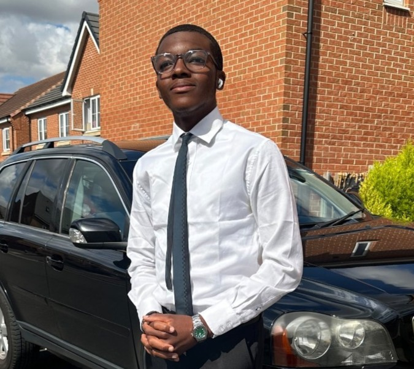

I’m Warren, a student and digital designer based in the UK. I specialise in creating flyers, banners, posters, and branding materials that help people and businesses communicate their identity with clarity and confidence. I’ve always enjoyed visual design — the process of taking an idea and shaping it into something clean, modern, and impactful.
Alongside design, I’m learning web development and building my first official website. Expanding into HTML and CSS has allowed me to combine creativity with technical skill, and I’m working towards offering full digital solutions through WFX Designs. My goal is to grow into a versatile creator who can design, build, and deliver complete visual experiences.
My long‑term goal is to become a software engineer, expanding from design into full‑stack development. I’m currently building my foundation in web development and programming, aiming to create digital products that combine strong visuals with reliable, modern software.
Through WFX Designs, I plan to combine my design background with technical development, creating digital products that are both visually strong and functionally robust. Becoming a software engineer will allow me to expand beyond design and contribute to building complete, user‑focused digital experiences.